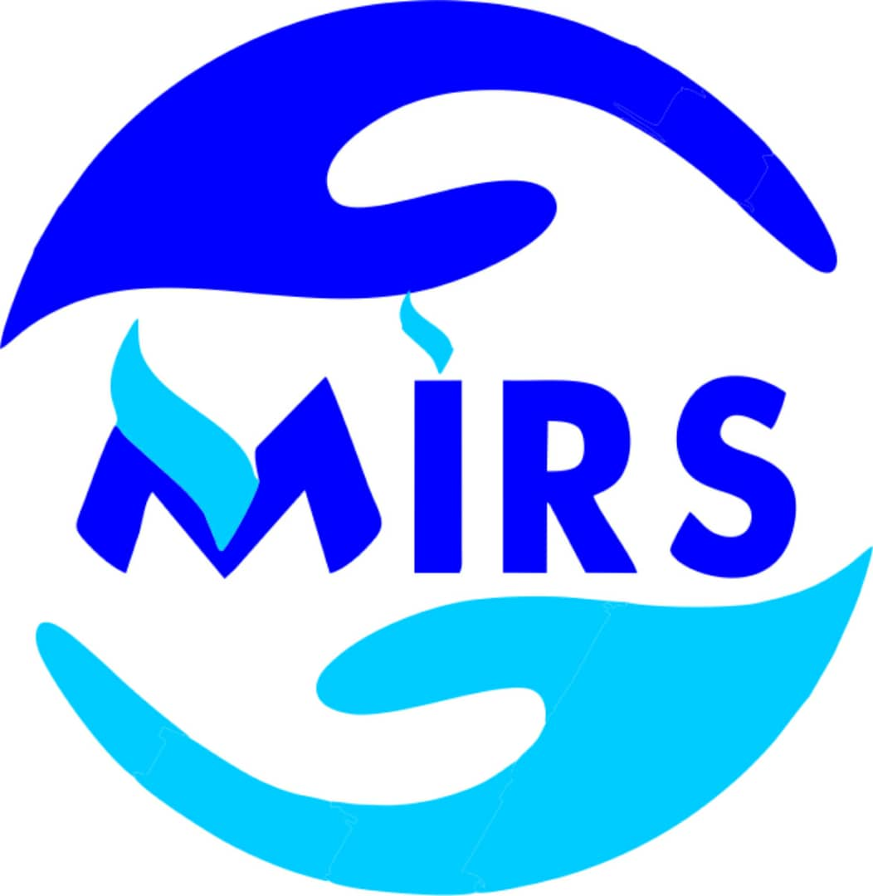

Visite technique
Rassembler les documents et confirmer le créneau.
PlanningET Équipe technique

MIRSmanagementToute l’expérience acquise par MIRS, réunie dans un seul outil.
Pour une gestion d’entreprise plus simple, plus cohérente et plus efficiente.
72 heures d’essai · Confirmation par SMS · Votre propre espace
VOTRE ACTIVITÉ, EN UN REGARD
Progression illustrative des tâches
DU BESOIN AU LIVRABLE
Une mission, un responsable et la prochaine action à portée de main.
Rassembler les documents et confirmer le créneau.
PlanningVérifier le matériel à affecter.
MatérielSuivre les tâches et préparer les éléments de recette.
InterventionPartager les livrables et recueillir la validation.
DocumentsLE SUIVI QUI COMPLÈTE L’ACTION
Retrouvez les documents commerciaux et les paiements associés à vos dossiers.
Les pièces et les échanges restent rattachés à leur dossier.
Un aperçu de vos possibilités. Données et dossiers fictifs à titre d’illustration.
Pensé pour les métiers qui font avancer le terrain.
d’expérience MIRS
Vingt ans à comprendre les besoins, coordonner les équipes et accompagner les entreprises. Ce savoir-faire prend aujourd’hui la forme d’un espace de gestion qui relie les clients, les projets, les ressources et les finances.
20 ans d’expertise réunis pour rendre la gestion d’entreprise plus efficiente.
Du besoin du client à la dernière pièce du dossier,
votre équipe garde le même fil.
Contacts, échanges, documents et validations : retrouvez le contexte pour préparer la prochaine conversation.
Reliez les missions, le planning et les ressources. Chacun retrouve ses tâches et les prochaines échéances.
Gardez vos devis, factures, dépenses et paiements dans la continuité du travail réalisé.
Réunissez les indicateurs, les alertes et les rapports pour savoir où concentrer votre attention.
Une méthode pour vos interventions ponctuelles
comme pour vos projets au long cours.
Rassemblez le besoin, le contact et les documents. Le dossier devient votre point de départ commun.
Clients & CRMPréparez les tâches, mobilisez l’équipe et réservez le matériel. Les échéances prennent leur place.
Projets & planningSuivez les livrables, les validations et les documents financiers. L’information accompagne la mission.
Suivi & financeLes fonctions se complètent, au rythme de votre organisation.
Vos indicateurs, alertes et activités.
Contacts, opportunités et relances.
Échanges, documents et validations.
Missions, responsables et livrables.
Échéances et disponibilité des équipes.
Devis, factures, paiements et dépenses.
Inventaire, réservations et affectations.
Profils, rôles et permissions.
Messages et campagnes configurées.
Contenus et circuits de validation.
Actions supervisées selon vos intégrations.
Préférences, rapports et exports.
Les services externes et les automatisations dépendent des intégrations activées dans votre espace.
Trois formules pour votre organisation.
Commencez par 72 heures d’essai pour découvrir MIRS.
Les outils pour structurer votre activité et garder le fil de vos opérations.
Facturation mensuelle
Jusqu’à 5 utilisateurs
Commencer l’essaiCoordonnez les échanges, la production et la relation client dans le même espace.
Facturation mensuelle
Jusqu’à 20 utilisateurs
Commencer l’essaiUn cadre plus large pour les équipes, les ressources et le pilotage de votre organisation.
Facturation mensuelle
Jusqu’à 50 utilisateurs
Commencer l’essai72 heures d’essai · Aucun prélèvement automatique · Activation après validation MIRS
Les éventuels coûts d’usage des fournisseurs SMS, e-mail et IA restent distincts du forfait. Les intégrations dépendent des services configurés pour votre organisation.
Besoin d’aide pour choisir ? Échangeons avec MIRS ↗Créez votre espace, découvrez les modules et imaginez votre organisation dans MIRS.
Commencer mon essaiVersion de recette actuelle.
Choisissez ensuite votre formule.
Activation après validation MIRS.
Et si vous souhaitez en parler, l’équipe MIRS est à votre écoute ↗.
Cliquez sur « Créer mon espace », puis complétez le formulaire d’inscription. Le parcours propose une confirmation par code SMS pour vérifier votre numéro.
Il vous permet de découvrir les modules dans un espace dédié à votre organisation. Le service est actuellement en version de recette. Vous pouvez ensuite demander l’activation d’un forfait Essentiel, Croissance ou Entreprise. Aucun prélèvement automatique n’est déclenché par l’essai.
Une inscription publique crée un espace indépendant pour votre organisation. Pour rejoindre l’équipe interne de MIRS et ses dossiers, utilisez une invitation de son administrateur.
Le module Équipe & accès permet de gérer les profils, les rôles et les permissions selon les responsabilités de chacun.
La plateforme est accessible depuis un navigateur sur ordinateur, tablette et téléphone. Une connexion Internet est nécessaire pour les services en ligne.
Leur disponibilité dépend de la configuration de chaque organisation et des comptes fournisseurs associés. Les éventuels coûts et conditions de ces services doivent être confirmés avec MIRS.
Du terrain à la décision. Tout simplement.